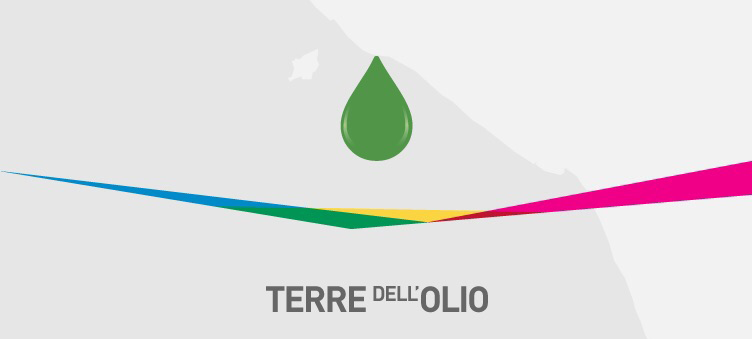
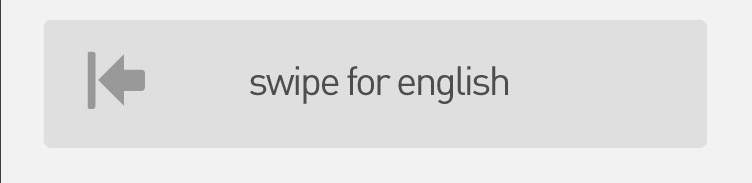

<html ng-app="olio">
  <head>
    <meta charset="utf-8">
    <meta name="viewport" content="initial-scale=1, maximum-scale=1, user-scalable=no, width=device-width">
    
    <title>Navigation with gesture</title>

    <link href="lib/ionic/css/ionic.css" rel="stylesheet">
    <link href="css/style.css" rel="stylesheet">
    <link href="css/home.css" rel="stylesheet">

    <!-- IF using Sass (run gulp sass first), then remove the CSS include above
    <link href="css/ionic.app.css" rel="stylesheet">
    -->

    <!-- ionic/angularjs js -->
    <script src="lib/ionic/js/ionic.bundle.js"></script>

    <!-- cordova script (this will be a 404 during development) -->
    <script src="cordova.js"></script>

    <!-- your app's js -->
    <script src="js/app.js"></script>
  </head>

  <body>

    
             
    <ion-nav-view></ion-nav-view>

 
  <!-- TUSCIA -->
  
     <script id="templates/tuscia.html" type="text/ng-template">
      <ion-view view-title="tuscia" class="tuscia">
        <ion-content class="padding" scroll="false">
          <div class="header header_zone"> </div>
		  
		  <div class="body"> 
		  <button class="button canino_button"></button>
		  <button class="button tuscia_button"></button>
		  <button class="button sabina_button"></button>
		  
		  </div>
		  
		  <div class="footerz footerz_en"> </div>
        </ion-content>
      </ion-view>
    </script>  

  </body>
</html>